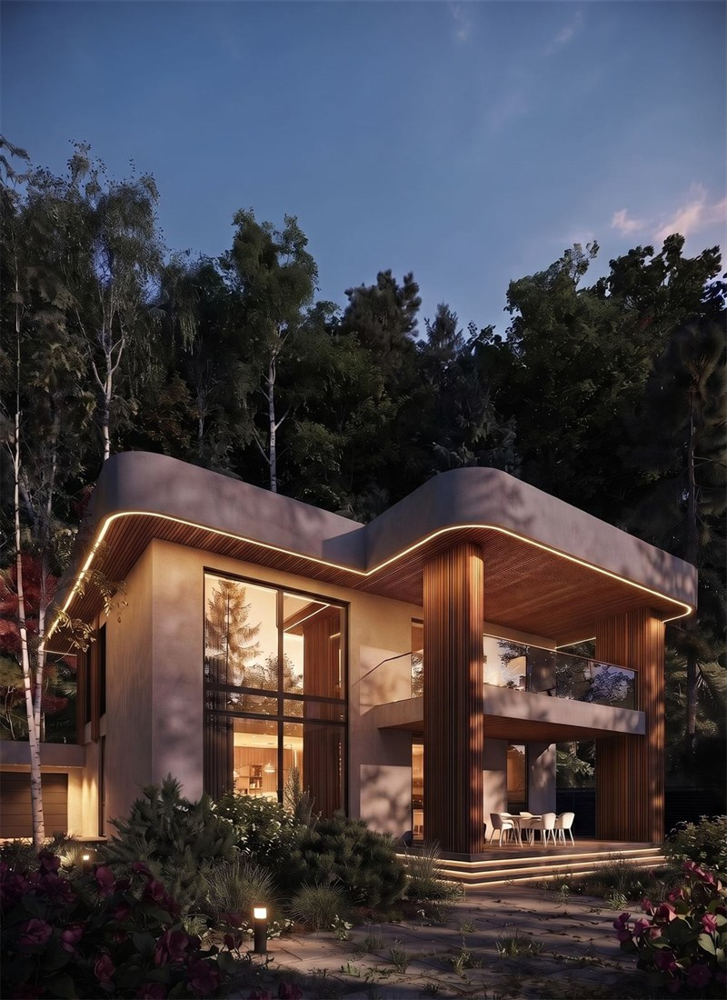
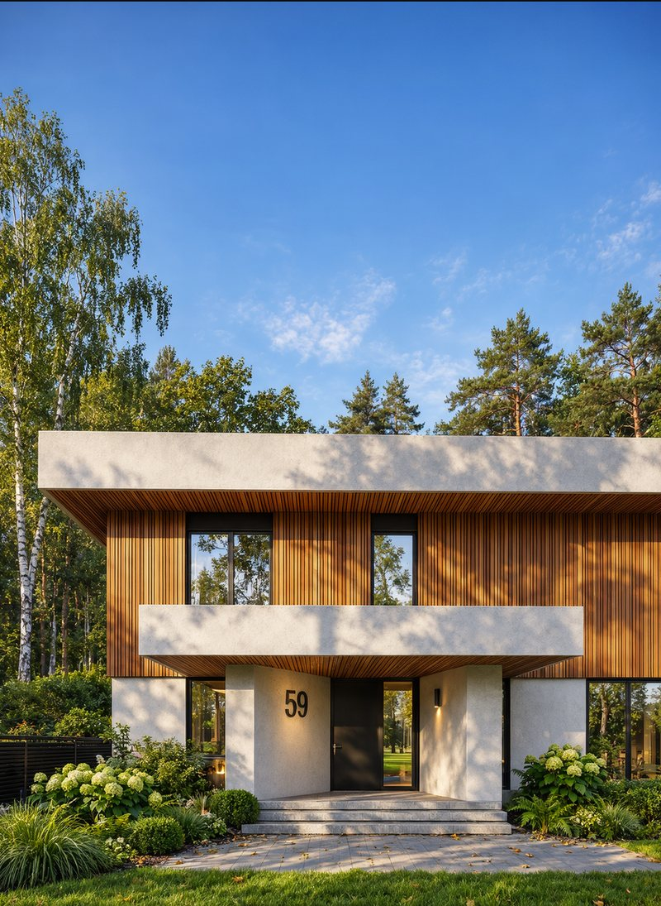
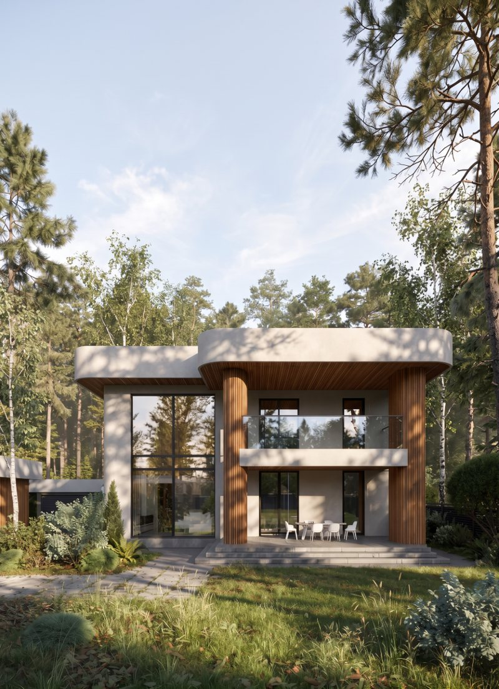
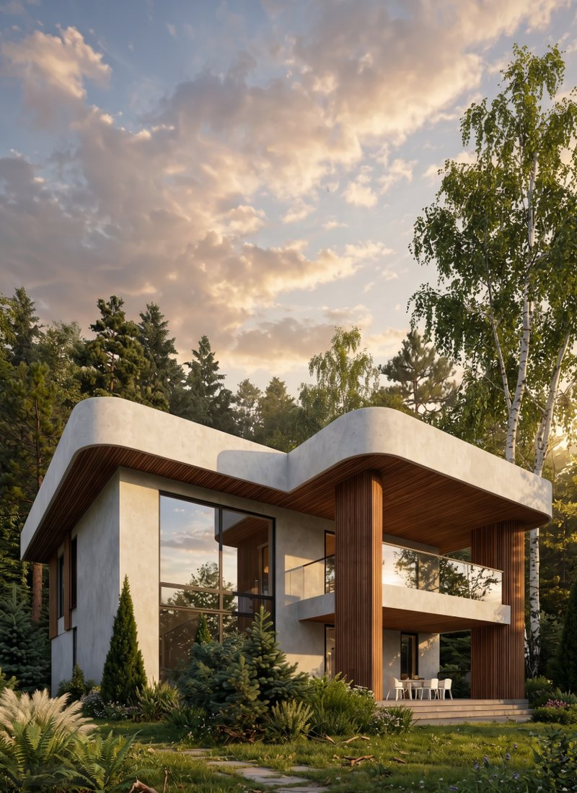
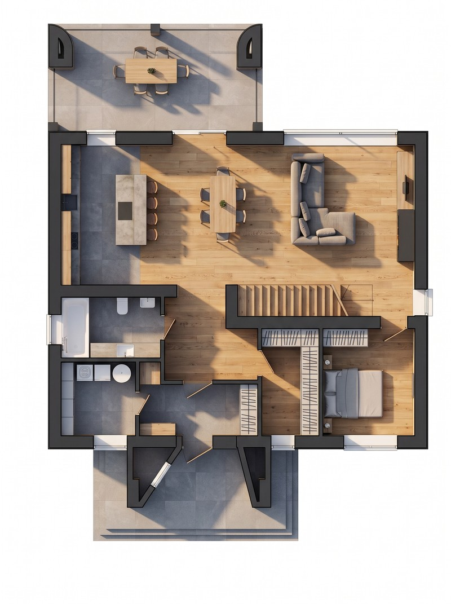
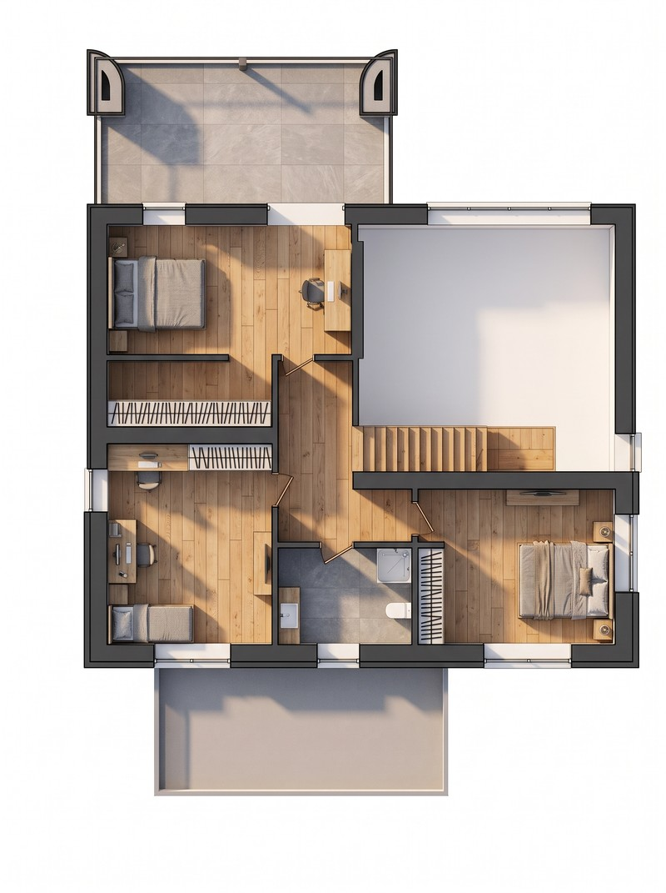
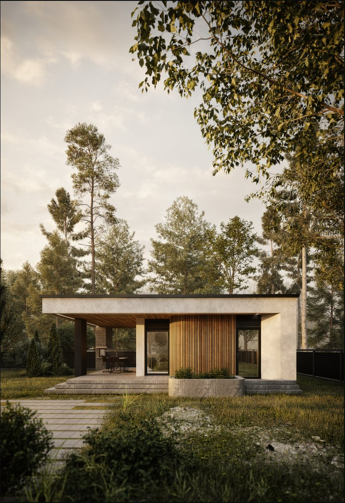
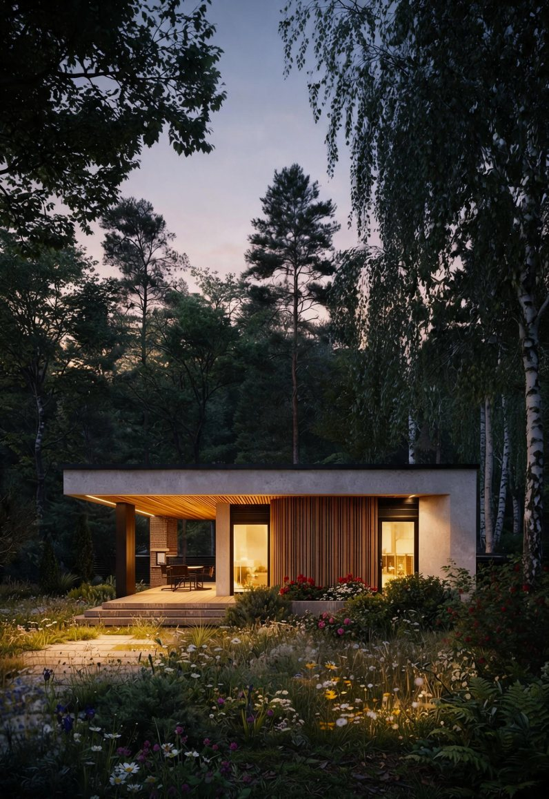
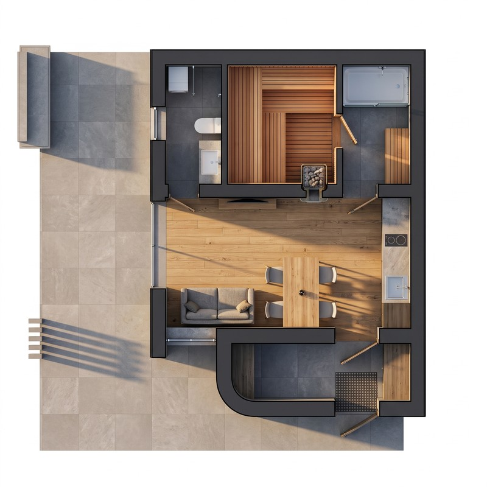

227,2 м², два этажа, панорамное остекление и тёплое дерево.
Дом, баня и гараж собраны в один ансамбль — и стали
местной достопримечательностью.

Вечерний вид: плавная кровля и панорамное остекление
Задача
Дом проектировался для семьи в Пермском крае. Важно было не просто
поставить здание на участок, а собрать вокруг него целый ансамбль:
жилой дом, баню и гараж в одной стилистике.
Заказчики хотели современную архитектуру, которая при этом
не спорит с окружением: крупные плоскости, натуральные материалы
и много света внутри.
«В нашем посёлке фурор произвёл — сколько комплиментов мы получили, приезжают как на экскурсию смотреть!»
Архитектура
Основа проекта — современный минимализм. Плавная линия кровли
задаёт силуэт, панорамное остекление раскрывает интерьер наружу,
а натуральное дерево добавляет тёплую фактуру.
Дом двухэтажный, общей площадью 227,2 м². Внутри — просторная
кухня-гостиная 61,1 м², терраса, спальни и балкон.

Фасад со стороны въезда
Пространство
Кухня-гостиная площадью 61,1 м² — самое большое общее пространство
дома. Она связана с террасой, поэтому в тёплый сезон дом
продолжается наружу.
Спальни и балкон — более спокойная часть: там меньше стекла
и другой свет. Такое разделение позволяет большой площади
не превращаться в один общий зал.

Терраса

Вечерний свет
Планировка
В проекте два этажа. На планах — все помещения, включая
кухню-гостиную 61,1 м². Листы можно рассмотреть целиком
на странице проекта «Дом 220 м²».

План первого этажа

План второго этажа
Единый ансамбль
На участке спроектированы баня и гараж в той же стилистике,
что и дом. Общая линия кровли, дерево и спокойная палитра
связывают постройки в один ансамбль.
Именно поэтому дом читается не как отдельное здание, а как
цельная среда: подъезд, двор и место отдыха решены в одном
ключе.

Баня днём

Баня вечером

План бани
Результат
Дом построен и живёт. Для меня как архитектора важнее всего
не картинка на экране, а реакция людей: когда дом становится
украшением и центром притяжения, работа сделана не зря.